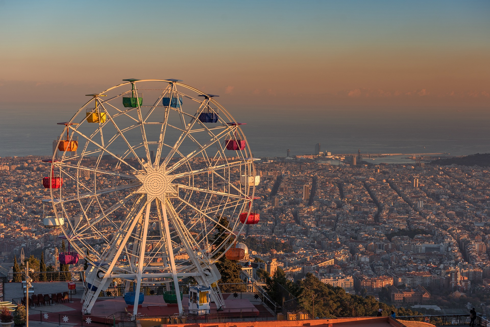

Barcelona
home to some of the most beautiful Gothic architecture and a city filled with excellent cuisine

home to some of the most beautiful Gothic architecture and a city filled with excellent cuisine